Grasshopper Components
Version 0.9.76.0
Curve
| Icon | Name | ID | Description |
|---|---|---|---|
| 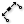 | Aligned Dimension | AlignDim | Create a distance annotation between two points |
| Arc Dimension | ArcDim | Create an angle annotation based on an arc. | |
| Circular Dimension | CircleDim | Create an angle annotation projected to a circle. | |
| Angular Dimension | AngleDim | Create an angle annotation between points. | |
| 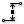 | Linear Dimension | LinearDim | Create a distance annotation between points, projected to a line. |
| Line Dimension | LineDim | Create a distance annotation along a line. | |
| Marker Dimension | MarkDim | Create a text annotation at a point | |
| 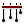 | Serial Dimension | SerialDim | Create a distance annotation between multiple points, projected to a line. |
Curve > Analysis
| Icon | Name | ID | Description |
|---|---|---|---|
| 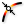 | Point On Curve | CurvePoint | Evaluates a curve at a specific location |
| Center | Cen | Find the center point and radius of arcs and circles. | |
| Evaluate Length | Eval | Evaluate a curve at a certain factor along its length. Length factors can be supplied both in curve units and normalized units. Change the [N] parameter to toggle between the two modes. | |
| Closed | Cls | Test if a curve is closed or periodic. | |
| Control Points | CP | Extract the nurbs control points and knots of a curve. | |
| Control Polygon | CPoly | Extract the nurbs control polygon of a curve. | |
| 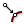 | Curve Closest Point | Crv CP | Find the closest point on a curve. |
| 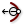 | Curvature | Curvature | Evaluate the curvature of a curve at a specified parameter. |
| 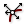 | Derivatives | CDiv | Evaluate the derivatives of a curve at a specified parameter. |
| 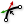 | Discontinuity | Disc | Find all discontinuities along a curve. |
| 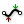 | Extremes | X-tremez | Find the extremes (highest and lowest points) on a curve. |
| Curve Nearest Object | CrvNear | Find the object nearest to a curve. | |
| Curve Proximity | CrvProx | Find the pair of closest points between two curves. | |
| Segment Lengths | LenSeg | Finds the shortest and longest segments of a curve. | |
| 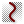 | Curve Side | Side | Find on which side of a curve a point exists |
| 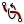 | Torsion | Torsion | Evaluate the torsion of a curve at a specified parameter. |
| Deconstruct Arc | DArc | Retrieve the base plane, radius and angle domain of an arc. | |
| Deconstuct Rectangle | DRec | Retrieve the base plane and side intervals of a rectangle. | |
| 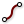 | End Points | End | Extract the end points of a curve. |
| Evaluate Curve | Eval | Evaluate a curve at the specified parameter. | |
| 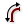 | Length | Len | Measure the length of a curve. |
| Length Domain | LenD | Measure the length of a curve subdomain. | |
| Length Parameter | LenP | Measure the length of a curve to and from a parameter. | |
| Planar | Planar | Test a curve for planarity. | |
| 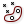 | Point In Curve | InCurve | Test a point for closed curve containment. |
| 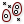 | Point in Curves | InCurves | Test a point for multiple closed curve containment. |
| 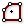 | Polygon Center | PCen | Find the center point (average) for a polyline. |
| 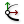 | Curve Frame | Frame | Get the curvature frame of a curve at a specified parameter. |
| 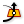 | Horizontal Frame | HFrame | Get a horizontally aligned frame along a curve at a specified parameter. |
| Perp Frame | PFrame | Solve the perpendicular (zero-twisting) frame at a specified curve parameter. |
Curve > Division
| Icon | Name | ID | Description |
|---|---|---|---|
| Dash Pattern | Dash | Convert a curve to a dash pattern. | |
| Shatter | Shatter | Shatter a curve into segments. | |
| Contour | Contour | Create a set of Curve contours | |
| Contour (ex) | Contour | Create a set of Curve contours | |
| Curve Frames | Frames | Generate a number of equally spaced curve frames. | |
| Horizontal Frames | HFrames | Generate a number of equally spaced, horizontally aligned curve frames. | |
| Perp Frames | PFrames | Generate a number of equally spaced, perpendicular frames along a curve. | |
| 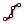 | Divide Curve | Divide | Divide a curve into equal length segments |
| Divide By Deviation | DivideDev | Divide a curve into segments with equal deviation | |
| 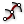 | Divide Distance | DivDist | Divide a curve with a preset distance between points |
| 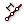 | Divide Length | DivLength | Divide a curve into segments with a preset length |
Curve > Primitive
| Icon | Name | ID | Description |
|---|---|---|---|
| Arc | Arc | Create an arc defined by base plane, radius and angle domain. | |
| 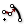 | Modified Arc | ModArc | Create an arc based on another arc. |
| 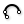 | Arc 3Pt | Arc | Create an arc through three points. |
| Arc SED | Arc | Create an arc defined by start point, end point and a tangent vector. | |
| BiArc | BiArc | Create a bi-arc based on endpoints and tangents. | |
| Circle | Cir | Create a circle defined by base plane and radius. | |
| Circle 3Pt | Circle | Create a circle defined by three points. | |
| 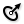 | Circle CNR | Circle | Create a circle defined by center, normal and radius. |
| Circle Fit | FCircle | Fit a circle to a collection of points. | |
| 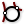 | Circle TanTan | CircleTT | Create a circle tangent to two curves. |
| 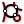 | Circle TanTanTan | CircleTTT | Create a circle tangent to three curves. |
| Ellipse | Ellipse | Create an ellipse defined by base plane and two radii. | |
| 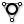 | InCircle | InCircle | Create the incircle of a triangle. |
| 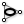 | InEllipse | InEllipse | Create the inscribed ellipse (Steiner ellipse) of a triangle. |
| 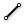 | Line | Ln | Create a line between two points. |
| 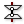 | Line 2Plane | Ln2Pl | Create a line between two planes. |
| 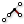 | Line 4Pt | Ln4Pt | Create a line from four points. |
| 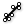 | Fit Line | FLine | Fit a line to a collection of points. |
| Line SDL | Line | Create a line segment defined by start point, tangent and length.} | |
| 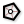 | Polygon | Polygon | Create a polygon with optional round edges. |
| Rectangle | Rectangle | Create a rectangle on a plane | |
| Rectangle 2Pt | Rec 2Pt | Create a rectangle from a base plane and two points | |
| 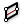 | Rectangle 3Pt | Rec 3Pt | Create a rectangle from three points |
| Tangent Arcs | TArc | Create tangent arcs between circles | |
| Tangent Lines | Tan | Create tangent lines between a point and a circle | |
| 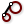 | Tangent Lines (Ex) | TanEx | Create external tangent lines between circles |
| 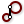 | Tangent Lines (In) | TanIn | Create internal tangent lines between circles |
Curve > Spline
| Icon | Name | ID | Description |
|---|---|---|---|
| 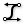 | Bezier Span | BzSpan | Construct a bezier span from endpoints and tangents. |
| Blend Curve | BlendC | Create a blend curve between two curves. | |
| 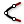 | Blend Curve Pt | BlendCPt | Create a blend curve between two curves that intersects a point. |
| Catenary | Cat | Create a catenary chain between two points. | |
| Catenary Ex | CatEx | Create a variable catenary chain between two points. | |
| 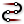 | Connect Curves | Connect | Connect a sequence of curves. |
| 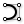 | Nurbs Curve | Nurbs | Construct a nurbs curve from control points. |
| Interpolate | IntCrv | Create an interpolated curve through a set of points. | |
| Curve On Surface | CrvSrf | Create an interpolated curve through a set of points on a surface. | |
| 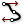 | Interpolate (t) | IntCrv(t) | Create an interpolated curve through a set of points with tangents. |
| 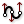 | Tangent Curve | TanCurve | Create a curve through a set of points with tangents. |
| Iso Curve | Iso | Construct {uv} isocurves on a surface. | |
| 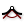 | Kinky Curve | KinkCrv | Construct an interpolated curve through a set of points with a kink angle threshold. |
| Match Curve | MatchCrv | Match two curves. | |
| 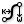 | NurbsCurve | NurbCrv | Construct a nurbs curve from control points, weights and knots. |
| Knot Vector | Knots | Construct a nurbs curve knot vector. | |
| PolyArc | PArc | Create a polycurve consisting of arc and line segments. | |
| PolyLine | PLine | Create a polyline connecting a number of points. | |
| Geodesic | Geodesic | Construct a surface geodesic between two points. | |
| Sub Curve | SubCrv | Construct a curve from the sub-domain of a base curve. | |
| Swing Arc | Swing | Create a polycurve consisting of arcs defined by center points. | |
| 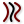 | Tween Curve | TweenCrv | Tween between two curves. |
Curve > Util
| Icon | Name | ID | Description |
|---|---|---|---|
| 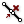 | Polyline Collapse | PCol | Collapse short segments in a polyline curve. |
| 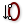 | Seam | Seam | Adjust the seam of a closed curve. |
| Curve To Polyline | ToPoly | Convert a curve to a polyline. | |
| Extend Curve | Ext | Extend a curve by a specified distance. | |
| Fillet | Fillet | Fillet the sharp corners of a curve. | |
| Fillet Distance | Fillet | Fillet the sharp corners of a curve by distance. | |
| Fillet | Fillet | Fillet a curve at a parameter. | |
| Fit Curve | Fit | Fit a curve along another curve. | |
| Flip Curve | Flip | Flip a curve using an optional guide curve. | |
| Join Curves | Join | Join as many curves as possible | |
| 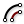 | Offset | Offset | Offset a curve with a specified distance. |
| Offset Loose | Offset (L) | Offset the control-points of a curve with a specified distance. | |
| Offset Loose 3D | Offset (3D) | Offset the control-points of a curve with a specified distance in 3D. | |
| Offset on Srf | OffsetS | Offset a curve on a surface with a specified distance. | |
| Project | Project | Project a curve onto a Brep. | |
| Pull Curve | Pull | Pull a curve onto a surface. | |
| Rebuild Curve | ReB | Rebuild a curve with a specific number of control-points. | |
| 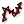 | Reduce | RedPLine | Reduce a polyline by removing least significant vertices. |
| Simplify Curve | Simplify | Simplify a curve. | |
| Smooth Polyline | SmoothPLine | Smooth the vertices of a polyline curve. | |
| Offset Polyline | OP | Offset a 2D polyline | |
| Explode | Explode | Explode a curve into smaller segments. |
Display > Colour
| Icon | Name | ID | Description |
|---|---|---|---|
| Spectral | Spec | Spectral test | |
| Colour CMYK | CMYK | Create a colour from floating point {CMYK} channels. | |
| 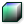 | Colour HSL | HSL | Create a colour from floating point {HSL} channels. |
| Colour L*ab | L*AB | Create a colour from floating point {CIE L*ab} channels. | |
| Colour LCH | LCH | Create a colour from floating point {CIE LCH} channels. | |
| Colour RGB | RGB | Create a colour from {RGB} channels. | |
| Colour RGB (f) | fRGB | Create a colour from floating point {RGB} channels. | |
| Split AHSV | AHSV | Split a colour into floating point {AHSV} channels | |
| Split ARGB | ARGB | Split a colour into floating point {ARGB} channels. | |
| Colour XYZ | XYZ | Create a colour from floating point {XYZ} channels (CIE 1931 spec). |
Display > Preview
| Icon | Name | ID | Description |
|---|---|---|---|
| Create Material | Material | Create an OpenGL material. | |
| Cloud Display | Cloud | Draw a collection of points as a fuzzy cloud | |
| Dot Display | Dots | Draw a collection of coloured dots |
Display > Vector
| Icon | Name | ID | Description |
|---|---|---|---|
| Point List | Points | Displays details about lists of points | |
| Point Order | Order | Displays the order of a list of points | |
| Vector Display | VDis | Preview vectors in the viewport | |
| Vector Display Ex | VDisEx | Preview vectors in the viewport |
Intersect > Mathematical
| Icon | Name | ID | Description |
|---|---|---|---|
| Curve | Line | CLX | Solve intersection events for a curve and a line. | |
| Curve | Plane | PCX | Solve intersection events for a curve and a plane. | |
| Line | Line | LLX | Solve intersection events for two lines. | |
| Line | Plane | PLX | Solve intersection event for a line and a plane. | |
| Brep | Line | BLX | Solve intersection events for a Brep and a line. | |
| Brep | Plane | Sec | Solve intersection events for a Brep and a plane (otherwise known as section). | |
| Contour | Contour | Create a set of Brep or Mesh contours | |
| Contour (ex) | Contour | Create a set of Brep or Mesh contours | |
| Mesh | Ray | MeshRay | Intersect a mesh with a semi-infinite ray | |
| Mesh | Plane | Sec | Solve intersection events for a Mesh and a Plane (otherwise known as section). | |
| Surface | Line | SLX | Solve intersection events for a surface and a line. | |
| IsoVist | IVist | Compute an isovist sampling at a location | |
| IsoVist Ray | IVRay | Compute a single isovist sample at a location | |
| Plane | Plane | Plane | 3PX | Solve the intersection events of three planes. | |
| Plane | Plane | PPX | Solve the intersection event of two planes. | |
| Plane Region | PlReg | Create a bounded region from intersecting planes. |
Intersect > Physical
| Icon | Name | ID | Description |
|---|---|---|---|
| Curve | Curve | CCX | Solve intersection events for two curves. | |
| Curve | Self | CX | Solve all self intersection events for a curve. | |
| Multiple Curves | MCX | Solve intersection events for multiple curves. | |
| Brep | Curve | BCX | Solve intersection events for a Brep and a curve. | |
| Brep | Brep | BBX | Solve intersection events for two Breps. | |
| Surface | Curve | SCX | Solve intersection events for a surface and a curve. | |
| Surface Split | SrfSplit | Split a surface with a bunch of curves. | |
| Mesh | Curve | MCX | Mesh Curve intersection | |
| Mesh | Mesh | MMX | Mesh Mesh intersection | |
| Collision Many|Many | ColMM | Test for many|many collision between objects | |
| Collision One|Many | ColOM | Test for one|many collision between objects |
Intersect > Region
| Icon | Name | ID | Description |
|---|---|---|---|
| Split with Brep | Split | Split a curve with a Brep. | |
| Split with Breps | Split | Split a curve with multiple Breps. | |
| Trim with Brep | Trim | Trim a curve with a Brep. | |
| Trim with Breps | Trim | Trim a curve with multiple Breps. | |
| Trim with Regions | Trim | Trim a curve with multiple regions. | |
| Trim with Region | Trim | Trim a curve with a region. |
Intersect > Shape
| Icon | Name | ID | Description |
|---|---|---|---|
| Solid Difference | SDiff | Perform a solid difference on two Brep sets. | |
| Solid Intersection | SInt | Perform a solid intersection on two Brep sets. | |
| Split Brep | Split | Split one brep with another. | |
| Trim Solid | Trim | Cut holes into a shape with a set of solid cutters. | |
| Solid Union | SUnion | Perform a solid union on a set of Breps. | |
| Box Slits | Slits | Add slits to a collection of intersecting boxes | |
| Boundary Volume | BVol | Create a closed polysurface from boundary surfaces | |
| Region Difference | RDiff | Difference between two sets of planar closed curves (regions) | |
| Region Intersection | RInt | Intersection between two sets of planar closed curves (regions) | |
| Region Union | RUnion | Union of a set of planar closed curves (regions) | |
| Region Slits | RSlits | Add slits to a collection of intersecting planar regions | |
| Mesh Difference | MDif | Perform a solid difference on two sets of meshes | |
| Mesh Intersection | MInt | Perform a solid intersection on a set of meshes | |
| Mesh Union | MUnion | Perform a solid union on a set of meshes | |
| Mesh Split | MSplit | Mesh Mesh split |
LegacyScript
| Icon | Name | ID | Description |
|---|---|---|---|
| DotNET C# Script (LEGACY) | C# | A C#.NET scriptable component | |
| DotNET VB Script (LEGACY) | VB | A VB.NET scriptable component |
Math > Operators
| Icon | Name | ID | Description |
|---|---|---|---|
| Addition | A+B | Mathematical addition |
Math > Time
| Icon | Name | ID | Description |
|---|---|---|---|
| Combine Date & Time | CDate | Combine a pure date and a pure time into a single date | |
| Construct Date | Date | Construct a date and time instance. | |
| Construct Exotic Date | DateEx | Construct a date using a specific calendar | |
| Construct Smooth Time | SmTime | Construct a time instance from smooth components | |
| Construct Time | Time | Construct a time instance | |
| Date Range | RDate | Create a range of successive dates or times | |
| Deconstruct Date | DDate | Deconstruct a date into years, months, days, hours, minutes and seconds | |
| Interpolate Date | IntDate | Interpolate between two dates or times. |
Math > Trig
| Icon | Name | ID | Description |
|---|---|---|---|
| Right Trigonometry | RTrig | Right triangle trigonometry | |
| Triangle Trigonometry | Trig | Generic triangle trigonometry |
Math > Util
| Icon | Name | ID | Description |
|---|---|---|---|
| Blur Numbers | NBlur | Blur a list of numbers by averaging neighbours |
Mathematics
| Icon | Name | ID | Description |
|---|---|---|---|
| Merge 10 | M10 | Merge ten streams into one. | |
| Merge | Merge | Merge two streams into one. | |
| Merge 03 | M3 | Merge three streams into one. | |
| Merge 04 | M4 | Merge four streams into one. | |
| Merge 05 | M5 | Merge five streams into one. | |
| Merge 06 | M6 | Merge six streams into one. | |
| Merge 08 | M8 | Merge eight streams into one. | |
| F4 | F(a,b,c,d) | A function of four variables; {a,b,c,d}. | |
| F8 | F(a,b,c,d,w,x,y,z) | A function of eight variables; {a,b,c,d,w,x,y,z}. | |
| F5 | F(a,b,c,d,x) | A function of five variables; {a,b,c,d,x}. | |
| F6 | F(a,b,c,d,x,y) | A function of six variables; {a,b,c,d,x,y}. | |
| F7 | F(a,b,c,d,x,y,z) | A function of seven variables; {a,b,c,d,x,y,z}. | |
| F1 | F(x) | A function of a single variable; {x}. | |
| F2 | F(x,y) | A function of two variables; {x,y} | |
| F3 | F(x,y,z) | A function of three variables; {x,y,z}. |
Maths > Domain
| Icon | Name | ID | Description |
|---|---|---|---|
| Construct Domain\x00b2 | Dom\x00b2 | Create a two-dimensional domain from two simple domains. | |
| Construct Domain\x00b2 | Dom\x00b2Num | Create a two-dimensinal domain from four numbers. | |
| Construct Domain | Dom | Create a numeric domain from two numeric extremes. | |
| Deconstruct Domain\x00b2 | DeDom2 | Deconstruct a two-dimensional domain into its component parts | |
| Deconstruct Domain\x00b2 | DeDom2Num | Deconstruct a two-dimensional domain into four numbers | |
| Deconstruct Domain | DeDomain | Deconstruct a numeric domain into its component parts. | |
| Divide Domain\x00b2 | Divide | Divides a two-dimensional domain into equal segments. | |
| Divide Domain | Div | Divide a domain into equal segments. | |
| Find Domain | FDom | Find the first domain that contains a specific value | |
| Includes | Inc | Test a numeric value to see if it is included in the domain | |
| Consecutive Domains | Consec | Create consecutive domains from a list of numbers | |
| Bounds | Bnd | Create a numeric domain which encompasses a list of numbers. | |
| Bounds 2D | Bnd | Create a numeric two-dimensional domain which encompasses a list of coordinates. | |
| Remap Numbers | ReMap | Remap numbers into a new numeric domain |
Maths > Matrix
| Icon | Name | ID | Description |
|---|---|---|---|
| Construct Matrix | Matrix | Construct a matrix from initial values | |
| Deconstruct Matrix | DeMatrix | Deconstruct a matrix into its component parts | |
| Invert Matrix | MInvert | Invert a matrix | |
| Swap Columns | SwapC | Swap two columns in a matrix | |
| Swap Rows | SwapR | Swap two rows in a matrix | |
| Transpose Matrix | Transpose | Transpose a matrix (swap rows and columns) |
Maths > Operators
| Icon | Name | ID | Description |
|---|---|---|---|
| Series Addition | SA | Perform serial addition until a goal has been reached | |
| Equality | Equals | Test for (in)equality of two numbers | |
| Larger Than | Larger | Larger than (or equal to) | |
| Mass Addition | MA | Perform mass addition of a list of items | |
| Mass Multiplication | MM | Perform mass multiplication of a list of numbers | |
| Relative Differences | RelDif | Compute relative differences for a list of data | |
| Similarity | Similar | Test for similarity of two numbers | |
| Smaller Than | Smaller | Smaller than (or equal to) | |
| Integer Division | A\B | Mathematical integer division | |
| Factorial | Fac | Returns the factorial of an integer. | |
| Gate And | And | Perform boolean conjunction (AND gate). | |
| Gate Majority | Vote | Calculates the majority vote among three booleans. | |
| Gate Nand | Nand | Perform boolean alternative denial (NAND gate). | |
| Gate Nor | Nor | Perform boolean joint denial (NOR gate). | |
| Gate Not | Not | Perform boolean negation (NOT gate). | |
| Gate Or | Or | Perform boolean disjunction (OR gate). | |
| Gate Xnor | Xnor | Perform boolean biconditional (XNOR gate). | |
| Gate Xor | Xor | Perform boolean exclusive disjunction (XOR gate). |
Maths > Polynomials
| Icon | Name | ID | Description |
|---|---|---|---|
| Log N | LogN | Return the N-base logarithm of a number. |
Maths > Script
| Icon | Name | ID | Description |
|---|---|---|---|
| Evaluate | Eval | Evaluate an expression with a flexible number of variables. | |
| Expression | Expression | Evaluate an expression |
Maths > Time
| Icon | Name | ID | Description |
|---|---|---|---|
| Realtime | RealTime | Provides realtime data representing date and time values |
Maths > Trig
| Icon | Name | ID | Description |
|---|---|---|---|
| Degrees | Deg | Convert an angle specified in radians to degrees | |
| Radians | Rad | Convert an angle specified in degrees to radians |
Maths > Util
| Icon | Name | ID | Description |
|---|---|---|---|
| Interpolate data | Interp | Interpolate a collection of data. | |
| Average | Avr | Solve the arithmetic average for a set of items | |
| Extremes | Extrz | Find the extremes in a list of values | |
| Truncate | Trunc | Perform truncation of numerical extremes | |
| Weighted Average | Wav | Solve the arithmetic weighted average for a set of items | |
| Round | Round | Round a floating point value. | |
| Natural logarithm | E | Returns a factor of the natural number (e). | |
| Epsilon | Eps | Returns a factor of double precision floating point epsilon. | |
| Golden Ratio | Phi | Returns a factor of the golden ratio (Phi). | |
| Pi | Pi | Returns a factor of Pi. | |
| Complex Argument | Arg | Get the argument of a Complex number | |
| Complex Components | Complex | Extract the Real and Imaginary components from a complex number | |
| Complex Conjugate | z* | Create the conjugate of a Complex number | |
| Complex Modulus | CMod | Get the modulus of a Complex number | |
| Create Complex | Complex | Create a complex number from a Real and an Imaginary component |
Mesh > Analysis
| Icon | Name | ID | Description |
|---|---|---|---|
| Deconstruct Face | DeFace | Deconstruct a mesh face into its four corner indices. | |
| Deconstruct Mesh | DeMesh | Deconstruct a mesh into its component parts. | |
| Mesh Closest Point | MeshCP | Finds the closest point on a mesh | |
| Mesh Edges | MEdges | Get all the edges of a mesh | |
| Mesh Eval | MEval | Evaluate a mesh at a given parameter | |
| Face Boundaries | FaceB | Convert all mesh faces to polylines | |
| Face Circles | FaceC | Solve the circumscribed circles for all mesh faces | |
| Face Normals | FaceN | Extract the normals and center points of all faces in a mesh | |
| Mesh Inclusion | MInc | Test a point for Mesh inclusion |
Mesh > Primitive
| Icon | Name | ID | Description |
|---|---|---|---|
| Construct Mesh | ConMesh | Construct a mesh from vertices, faces and optional colours. | |
| Mesh Box | MBox | Create a mesh box. | |
| Mesh Colours | MCol | Assign a repeating colour pattern to a mesh object. | |
| Mesh Spray | MSpray | Assign colours to a mesh based on spray points. | |
| Mesh Plane | MPlane | Create a mesh plane. | |
| Mesh Sphere | MSphere | Create a mesh sphere. | |
| Mesh Sphere Ex | MSphereEx | Create a mesh sphere from square patches. | |
| Mesh Quad | Quad | Create a mesh quad. | |
| Mesh Triangle | Triangle | Create a mesh triangle. |
Mesh > Triangulation
| Icon | Name | ID | Description |
|---|---|---|---|
| Delaunay Edges | Con | Delaunay connectivity | |
| Convex Hull | Hull | Compute the planar, convex hull for a collection of points | |
| Delaunay Mesh | Del | Delaunay triangulation | |
| Facet Dome | Facet | Create a facetted dome | |
| OcTree | OcT | A three-dimensional oc-tree structure | |
| Voronoi | Voronoi | Planar voronoi diagram for a collection of points | |
| Proximity 2D | Prox | Search for two-dimensional proximity within a point list | |
| Proximity 3D | Prox | Search for three-dimensional proximity within a point list | |
| QuadTree | QT | A two-dimensional quadtree structure | |
| Voronoi Groups | VorGroup | Compute a custom set of nested voronoi diagrams. | |
| Substrate | Substrate | Substrate algorithm inspired by Jared Tarbell (Complexification.net) | |
| Voronoi 3D | Voronoi\x00b3 | Volumetric voronoi diagram for a collection of points | |
| Voronoi Cell | VCell | Compute a single 3D Voronoi cell |
Mesh > Util
| Icon | Name | ID | Description |
|---|---|---|---|
| Exposure | Exposure | Solve mesh exposure for a collection of energy rays and obstructions. | |
| Occlusion | Occ | Solve occlusion for a collection of view rays and obstructions. | |
| Blur Mesh | MBlur | Blur the colours on a mesh | |
| Mesh Brep | Mesh | Create a mesh that approximates Brep geometry | |
| Simple Mesh | SMesh | Create a mesh that represents a Brep as simply as possible | |
| Cull Faces | CullF | Cull faces from a mesh | |
| Cull Vertices | CullV | Cull vertices from a mesh | |
| Delete Faces | DeleteF | Delete faces from a mesh | |
| Delete Vertices | DeleteV | Delete vertices from a mesh | |
| Mesh Join | MJoin | Join a set of meshes into a single mesh | |
| Quadrangulate | Quad | Quadrangulate as many triangles as possible in a mesh | |
| Settings (Custom) | Custom Mesh Settings | Represents custom mesh settings. | |
| Settings (Speed) | Jagged | Represents 'Jagged & faster' mesh settings. | |
| Settings (Quality) | Smooth | Represents 'Smooth & slower' mesh settings. | |
| Mesh Shadow | MShadow | Compute the shadow outline for a mesh object | |
| Disjoint Mesh | Disjoint | Split a mesh into disjoint pieces. | |
| Mesh Split Plane | MSplit | Split a mesh with an infinite plane. | |
| Mesh Surface | Mesh UV | Create a Surface UV mesh | |
| Triangulate | Tri | Triangulate all quads in a mesh | |
| Unweld Mesh | Unweld | Unweld (split) creases in a mesh | |
| Weld Mesh | Weld | Weld (merge) creases in a mesh | |
| Smooth Mesh | MSmooth | Smooth the vertices of a mesh |
Params > Input
| Icon | Name | ID | Description |
|---|---|---|---|
| Atom Data | Atom | Get detailed information for an atom | |
| Import Image | IMG | Import image data from bmp, jpg or png files. | |
| Import PDB | PDB | Import data from Protein Data Bank *.pdb files. | |
| Import Coordinates | Coords | Import point coordinates from generic text files. | |
| Import 3DM | 3DM | Import geometry from Rhino 3dm files. | |
| Import SHP | SHP | Import data from GIS *.shp files. |
Params > Util
| Icon | Name | ID | Description |
|---|---|---|---|
| Fitness Landscape | LScape | Display a 2.5D fitness landscape |
Script
| Icon | Name | ID | Description |
|---|---|---|---|
| C# Script | C# | A C#.NET scriptable component | |
| VB Script | VB | A VB.NET scriptable component |
Sets > List
| Icon | Name | ID | Description |
|---|---|---|---|
| Combine Data | Combine | Combine non-null items out of several inputs | |
| Dispatch | Dispatch | Dispatch the items in a list into two target lists. | |
| Insert Items | Ins | Insert a collection of items into a list. | |
| Null Item | Null | Test a data item for null or invalidity | |
| Item Index | Index | Retrieve the index of a certain item in a list. | |
| List Item | Item | Retrieve a specific item from a list. | |
| List Length | Lng | Measure the length of a list. | |
| Cross Reference | CrossRef | Cross Reference data from multiple lists | |
| Longest List | Long | Grow a collection of lists to the longest length amongst them | |
| Shortest List | Short | Shrink a collection of lists to the shortest length amongst them | |
| Partition List | Partition | Partition a list into sub-lists | |
| Pick'n'Choose | P'n'C | Pick and choose from a set of input data. | |
| Replace Items | Replace | Replace certain items in a list. | |
| Replace Nulls | NullRep | Replace nulls or invalid data with other data | |
| Reverse List | Rev | Reverse the order of a list. | |
| Shift List | Shift | Offset all items in a list. | |
| Sift Pattern | Sift | Sift elements in a list using a repeating index pattern. | |
| Sort List | Sort | Sort a list of numeric keys. | |
| Split List | Split | Split a list into separate parts. | |
| Sub List | SubSet | Extract a subset from a list. | |
| Weave | Weave | Weave a set of input data using a custom pattern. |
Sets > Sequence
| Icon | Name | ID | Description |
|---|---|---|---|
| Sequence | Seq | Create a sequence of textual characters. | |
| Fibonacci | Fib | Creates a Fibonacci sequence. | |
| Jitter | Jitter | Randomly shuffles a list of values. | |
| Random | Random | Generate a list of pseudo random numbers. | |
| Range | Range | Create a range of numbers. | |
| Series | Series | Create a series of numbers. | |
| Cull Index | Cull i | Cull (remove) indexed elements from a list. | |
| Cull Nth | CullN | Cull (remove) every Nth element in a list. | |
| Cull Pattern | Cull | Cull (remove) elements in a list using a repeating bit mask. | |
| Duplicate Data | Dup | Duplicate data a predefined number of times. | |
| Random Reduce | Reduce | Randomly remove N items from a list | |
| Repeat Data | Repeat | Repeat a pattern until it reaches a certain length. | |
| Stack Data | Stack | Duplicate individual items in a list of data | |
| RandomEx | RndEx | Generate random data between extremes. |
Sets > Sets
| Icon | Name | ID | Description |
|---|---|---|---|
| Create Set | CSet | Creates the valid set from a list of items (a valid set only contains distinct elements). | |
| Find similar member | FSim | Find the most similar member in a set. | |
| Disjoint | Disjoint | Test whether two sets are disjoint. | |
| SubSet | SubSet | Test two sets for inclusion. | |
| Key/Value Search | KeySearch | Extract an item from a collection using a key-value match | |
| Delete Consecutive | DCon | Delete consecutive similar members in a set. | |
| Replace Members | Replace | Replace members in a set. | |
| Carthesian Product | CProd | Create the Carthesian product for two sets of identical cardinality. | |
| Set Difference | Difference | Create the difference of two sets (the collection of objects present in A but not in B). | |
| Set Intersection | Intersection | Creates the intersection of two sets (the collection of unique objects present in both sets). | |
| Member Index | MIndex | Find the occurences of a specific member in a set. | |
| Set Difference (S) | ExDiff | Create the symmetric difference of two sets (the collection of objects present in A or B but not both). | |
| Set Majority | Majority | Determine majority member presence amongst three sets. | |
| Set Union | SUnion | Creates the union of two sets (the collection of unique objects present in either set). |
Sets > Text
| Icon | Name | ID | Description |
|---|---|---|---|
| Text Case | Case | Change the CaSiNg of a piece of text | |
| Concatenate | Concat | Concatenate some fragments of text | |
| Format | Format | Format some data using placeholders and formatting tags | |
| Text Fragment | Fragment | Extract a fragment (subset) of some text | |
| Replace Text | Rep | Replace all occurences of a specific text fragment with another | |
| Sort Text | TSort | Sort a collection of text fragments | |
| Text Distance | TDist | Compute the Levenshtein distance between two fragments of text. | |
| Text Join | Join | Join a collection of text fragments into one | |
| Text Length | Len | Get the length (character count) of some text | |
| Match Text | TMatch | Match a text against a pattern | |
| Text Split | Split | Split some text into fragments using separators | |
| Characters | Chars | Break text into individual characters | |
| Text Trim | Trim | Remove whitespace characters from the start and end of some text. |
Sets > Tree
| Icon | Name | ID | Description |
|---|---|---|---|
| Entwine | Entwine | Flatten and combine a collection of data streams | |
| Merge Multiple | Merge | Merge multiple input streams into one | |
| Merge | Merge | Merge a bunch of data streams | |
| Construct Path | Path | Construct a data tree branch path. | |
| Deconstruct Path | DPath | Deconstruct a data tree path into individual integers. | |
| Relative Item | RelItem | Retrieve a relative item combo from a data tree | |
| Relative Items | RelItem2 | Retrieve a relative item combo from two data trees | |
| Tree Branch | Branch | Retrieve a specific branch from a data tree. | |
| Tree Item | Item | Retrieve a specific item from a data tree. | |
| Tree Statistics | TStat | Get some statistics regarding a data tree. |
Surface > Analysis
| Icon | Name | ID | Description |
|---|---|---|---|
| Area Moments | AMoments | Solve area moments for breps, meshes and planar closed curves. | |
| Area | Area | Solve area properties for breps, meshes and planar closed curves. | |
| Box Corners | Box Corners | Extract all 8 corners of a box. | |
| Box Properties | BoxProp | Get some properties of a box | |
| Brep Closest Point | Brep CP | Find the closest point on a brep | |
| Brep Edges | Edges | Extract the edge curves of a brep. | |
| Brep Topology | Topology | Get and display the topology of a brep. | |
| Point In Brep | BrepInc | Test whether a point is inside a closed brep | |
| Point In Breps | BrepsInc | Test whether a point is inside a collection of closed breps | |
| Brep Wireframe | Wires | Extract the wireframe curves of a brep. | |
| Deconstruct Box | DeBox | Deconstruct a box into its constituent parts. | |
| Deconstruct Brep | DeBrep | Deconstruct a brep into its constituent parts. | |
| Evaluate Box | Box | Evaluate a box in normalised {UVW} space. | |
| Evaluate Surface | EvalSrf | Evaluate local surface properties at a {uv} coordinate. | |
| Shape In Brep | ShapeIn | Tests whether a shape is inside a brep | |
| Surface Closest Point | Srf CP | Find the closest point on a surface. | |
| Surface Curvature | Curvature | Evaluate the surface curvature at a {uv} coordinate. | |
| Dimensions | Dim | Get the approximate dimensions of a surface | |
| Surface Inflection | SInf | Compute the inflection curves for a surface | |
| Is Planar | Planar | Test whether a surface is planar | |
| Osculating Circles | Osc | Calculate the principal osculating circles of a surface at a {uv} coordinate. | |
| Surface Points | SrfPt | Get the control-points of a Nurbs Surface | |
| Principal Curvature | Curvature | Evaluate the principal curvature of a surface at a {uv} coordinate. | |
| Point In Trim | TrimInc | Test whether a {uv} coordinate is inside the trimmed portion of a surface | |
| Volume Moments | VMoments | Solve volume properties for closed breps and meshes. | |
| Volume | Volume | Solve volume properties for closed breps and meshes. |
Surface > Freeform
| Icon | Name | ID | Description |
|---|---|---|---|
| 4Point Surface | Srf4Pt | Create a surface connecting three or four corner points. | |
| Boundary Surfaces | Boundary | Create planar surfaces from a collection of boundary edge curves. | |
| Edge Surface | EdgeSrf | Create a surface from two, three or four edge curves. | |
| Extrude | Extr | Extrude curves and surfaces along a vector. | |
| Extrude Along | ExtrCrv | Extrude curves and surfaces along a curve. | |
| Extrude Linear | Extrude | Extrude curves and surfaces along a straight path. | |
| Extrude Point | Extr | Extrude curves and surfaces to a point. | |
| Fragment Patch | FPatch | Create a fragmented patch from a polyline boundary | |
| Loft Options | Loft Opt | Create loft options from atomic inputs | |
| Loft | Loft | Create a lofted surface through a set of section curves. | |
| Network Surface | NetSurf | Create a surface from curve networks | |
| Patch | Patch | Create a patch surface | |
| Pipe | Pipe | Create a pipe surface around a rail curve. | |
| Pipe Variable | VPipe | Create a pipe surface with variable radii around a rail curve. | |
| Surface From Points | SrfGrid | Create a nurbs surface from a grid of points. | |
| Rail Revolution | RailRev | Create a surface of revolution using a sweep rail. | |
| Revolution | RevSrf | Create a surface of revolution. | |
| Ruled Surface | RuleSrf | Create a surface between two curves. | |
| Sum Surface | SumSrf | Create a sum surface from two edge curves. | |
| Sweep1 | Swp1 | Create a sweep surface with one rail curve. | |
| Sweep2 | Swp2 | Create a sweep surface with two rail curves. |
Surface > Primitive
| Icon | Name | ID | Description |
|---|---|---|---|
| Bounding Box | BBox | Solve oriented geometry bounding boxes. | |
| Box 2Pt | Box | Create a box defined by two points. | |
| Box Rectangle | BoxRec | Create a box defined by a rectangle and a height. | |
| Center Box | Box | Create a box centered on a plane. | |
| Cone | Cone | Create a conical surface | |
| Cylinder | Cyl | Create a cylindrical surface. | |
| Domain Box | Box | Create a box defined by a base plane and size domains. | |
| Plane Surface | PlaneSrf | Create a plane surface | |
| Plane Through Shape | PxS | Make a rectangular surface that is larger than a given shape. | |
| Sphere | Sph | Create a spherical surface. | |
| Sphere 4Pt | Sph4Pt | Create a spherical surface from 4 points. | |
| Sphere Fit | SFit | Fit a sphere to a 3D collection of points |
Surface > Util
| Icon | Name | ID | Description |
|---|---|---|---|
| Brep Join | Join | Join a number of Breps together | |
| Cap Holes Ex | CapEx | Cap as many holes as possible in a Brep. | |
| Cap Holes | Cap | Cap all planar holes in a Brep. | |
| Copy Trim | Trim | Copy UV trim data from one surface to another. | |
| Flip | Flip | Flip the normals of a surface based on local or remote geometry | |
| Isotrim | SubSrf | Extract an isoparametric subset of a surface. | |
| Merge Faces | FMerge | Merge all adjacent co-planar faces in a brep | |
| Offset | Offset | Offset a surface by a fixed amount. | |
| Offset Loose | Offset | Offset a surface by moving the control points. | |
| Retrim | Retrim | Retrim a surface based on 3D trim data from another surface. | |
| Untrim | Untrim | Remove all trim curves from a surface. | |
| Divide Surface | SDivide | Generate a grid of {uv} points on a surface. | |
| Surface Frames | SFrames | Generate a grid of {uv} frames on a surface |
Transform > Affine
| Icon | Name | ID | Description |
|---|---|---|---|
| Box Mapping | BoxMap | Transform geometry from one box into another. | |
| Orient Direction | Orient | Orient an object using directional constraints only. | |
| Project | Project | Project an object onto a plane. | |
| Project Along | ProjectA | Project an object onto a plane along a direction. | |
| Rectangle Mapping | RecMap | Transform geometry from one rectangle into another. | |
| Scale | Scale | Scale an object uniformly in all directions. | |
| Scale NU | Scale NU | Scale an object with non-uniform factors. | |
| Shear Angle | Shear | Shear an object based on tilt angles. | |
| Shear | Shear | Shear an object based on a shearing vector. | |
| Triangle Mapping | TriMap | Transform geometry from one triangle into another. |
Transform > Array
| Icon | Name | ID | Description |
|---|---|---|---|
| Box Array | ArrBox | Create a box array of geometry. | |
| Curve Array | ArrCurve | Create an array of geometry along a curve. | |
| Linear Array | ArrLinear | Create a linear array of geometry. | |
| Polar Array | ArrPolar | Create a polar array of geometry. | |
| Rectangular Array | ArrRec | Create a rectangular array of geometry. | |
| Kaleidoscope | KScope | Apply a kaleidoscope transformation to an object. |
Transform > Euclidean
| Icon | Name | ID | Description |
|---|---|---|---|
| Sanity XForm | MWHAHAHA!! | Apply a sanity transformation to f a r - a w a y, tiny or HUGE geometry | |
| Mirror | Mirror | Mirror an object. | |
| Move | Move | Translate (move) an object along a vector. | |
| Move Away From | MoveAway | Translate (move) an object away from another object. | |
| Move To Plane | MoveToPlane | Translate (move) an object onto a plane. | |
| Orient | Orient | Orient an object. Orientation is sometimes called a 'ChangeBasis tranformation'. It allows for remapping of geometry from one axis-system to another. | |
| Rotate | Rotate | Rotate an object in a plane. | |
| Rotate 3D | Rot3D | Rotate an object around a center point and an axis vector. | |
| Rotate Axis | RotAx | Rotate an object around an axis. | |
| Rotate | Rotate | Rotate an object in a plane. |
Transform > Morph
| Icon | Name | ID | Description |
|---|---|---|---|
| Map to Surface | Map Srf | Map a curve onto a surface via control points. | |
| Bend Deform | Bend | Deform a shape by bending it | |
| Box Morph | Morph | Morph an object into a twisted box. | |
| Point Deform | PDeform | Deform a shape by moving control-points individually | |
| Blend Box | BlendBox | Create a twisted box between two surfaces. | |
| Surface Box | SBox | Create a twisted box on a surface patch. | |
| Twisted Box | TBox | Create a twisted box from corner points. | |
| Mirror Curve | Mirror | Mirror a shape in a freeform curve. | |
| Mirror Surface | Mirror | Mirror geometry in a freeform surface. | |
| Surface Morph | SrfMorph | Morph geometry into surface UVW coordinates | |
| Spatial Deform | Deform | Perform spatial deformation based on custom space syntax. | |
| Spatial Deform (custom) | Deform | Perform spatial deformation based on custom space syntax. | |
| Camera Obscura | CO | Camera Obscura (point mirror) transformation. |
Transform > Util
| Icon | Name | ID | Description |
|---|---|---|---|
| Transform | Transform | Transform an object. | |
| Compound | Comp | Compound two transformations. | |
| Inverse Transform | Inverse | Invert a transformation. | |
| Split | Split | Split a compound transformation into fragments. |
Vector > Colour
| Icon | Name | ID | Description |
|---|---|---|---|
| Blend Colours | BlendCol | Interpolate (blend) between two colours. |
Vector > Field
| Icon | Name | ID | Description |
|---|---|---|---|
| Break Field | BreakF | Break a field into individual elements | |
| Line Charge | LCharge | Create a field due to a line charge | |
| Point Charge | PCharge | Create a field due to a point charge | |
| Spin Force | FSpin | Create a field due to a spin force | |
| Vector Force | FVector | Create a field due to a vector force | |
| Evaluate Field | EvF | Evaluate a field at a point | |
| Tensor Display | FTensor | Display the tensor vectors of a field section | |
| Field Line | FLine | Compute the field line through a certain point | |
| Merge Fields | MergeF | Merge a collection of fields into one |
Vector > Grid
| Icon | Name | ID | Description |
|---|---|---|---|
| Populate 3D | Pop3D | Populate a 3-Dimensional region with points | |
| Populate Geometry | PopGeo | Populate generic geometry with points | |
| Populate 2D | Pop2D | Populate a 2-Dimensional region with points | |
| Hexagonal | HexGrid | 2D grid with hexagonal cells | |
| Radial | RadGrid | 2D radial grid | |
| Rectangular | RecGrid | 2D grid with rectangular cells | |
| Square | SqGrid | 2D grid with square cells | |
| Triangular | TriGrid | 2D grid with triangular cells |
Vector > Plane
| Icon | Name | ID | Description |
|---|---|---|---|
| Plane Coordinates | PlCoord | Get the coordinates of a point in a plane axis system. | |
| Adjust Plane | PAdjust | Adjust a plane to match a new normal direction | |
| Align Plane | Align | Perform minimal rotation to align a plane with a guide vector | |
| Align Planes | Align | Align planes by minimizing their serial rotation. | |
| Construct Plane | Pl | Construct a plane from an origin point and {x}, {y} axes. | |
| Deconstruct Plane | DePlane | Deconstruct a plane into its component parts. | |
| Plane 3Pt | Pl 3Pt | Create a plane through three points. | |
| Plane Closest Point | CP | Find the closest point on a plane. | |
| Plane Fit | PlFit | Fit a plane through a set of points. | |
| Line + Line | LnLn | Create a plane from two line segments. | |
| Line + Pt | LnPt | Create a plane from a line and a point. | |
| Plane Normal | Pl | Create a plane perpendicular to a vector. | |
| Plane Offset | Pl Offset | Offset a plane. | |
| Plane Origin | Pl Origin | Change the origin point of a plane | |
| Rotate Plane | PRot | Perform plane rotation around plane z-axis | |
| XY Plane | XY | World XY plane. | |
| XZ Plane | XZ | World XZ plane. | |
| YZ Plane | YZ | World YZ plane. |
Vector > Point
| Icon | Name | ID | Description |
|---|---|---|---|
| Project Point | Project | Project a point onto a collection of shapes | |
| Closest Point | CP | Find closest point in a point collection. | |
| Closest Points | CPs | Find closest points in a point collection. | |
| Construct Point | Pt | Construct a point from {xyz} coordinates. | |
| Cull Duplicates | CullPt | Cull points that are coincident within tolerance | |
| Deconstruct | pDecon | Deconstruct a point into its component parts. | |
| Distance | Dist | Compute Euclidean distance between two point coordinates. | |
| Numbers to Points | Pt2Num | Convert a list of numbers to a list of points | |
| Barycentric | BCentric | Create a point from barycentric {u,v,w} coordinates | |
| Point Cylindrical | Pt | Create a point from cylindrical {angle,radius,elevation} coordinates. | |
| Point Groups | PGroups | Create groups from nearby points | |
| Point Oriented | Pt | Create a point from plane {u,v,w} coordinates. | |
| Point Polar | Pt | Create a point from polar {phi,theta,offset} coordinates. | |
| To Polar | Polar | Convert a 3D point to plane polar coordinates. | |
| Points to Numbers | Pt2Num | Convert a list of points to a list of numbers | |
| Pull Point | Pull | Pull a point to a variety of geometry. | |
| Sort Points | Sort Pt | Sort points by Euclidean coordinates (first x, then y, then z) | |
| Sort Along Curve | AlongCrv | Sort points along a curve |
Vector > Vector
| Icon | Name | ID | Description |
|---|---|---|---|
| Vector XYZ | Vec | Create a vector from {xyz} components. | |
| Deconstruct Vector | DeVec | Deconstruct a vector into its component parts. | |
| Unit Vector | Unit | Unitize vector. | |
| Unit X | X | Unit vector parallel to the world {x} axis. | |
| Unit Y | Y | Unit vector parallel to the world {y} axis. | |
| Unit Z | Z | Unit vector parallel to the world {z} axis. | |
| Vector 2Pt | Vec2Pt | Create a vector between two points. | |
| Amplitude | Amp | Set the amplitude (length) of a vector. | |
| Angle | Angle | Compute the angle between two vectors. | |
| Cross Product | XProd | Compute vector cross product. | |
| Divide | VDiv | Perform vector-scalar division. | |
| Dot Product | DProd | Compute vector dot product. | |
| Vector Length | VLen | Compute the length (amplitude) of a vector. | |
| Multiply | VMul | Perform vector-scalar multiplication. | |
| Reverse | Rev | Reverse a vector (multiply by -1). | |
| Rotate | VRot | Rotate a vector around an axis. | |
| Addition | VAdd | Perform vector-vector addition. | |
| Solar Incidence | Solar | Gets the solar incidence vector for a certain time and place |
XForm > Mapping
| Icon | Name | ID | Description |
|---|---|---|---|
| Poincare Map | Poincare | Represents a conformal mapping from Euclidean 2 space to Poincare hyperbolic disc |
Copyright © 2016 Robert McNeel & Associates.